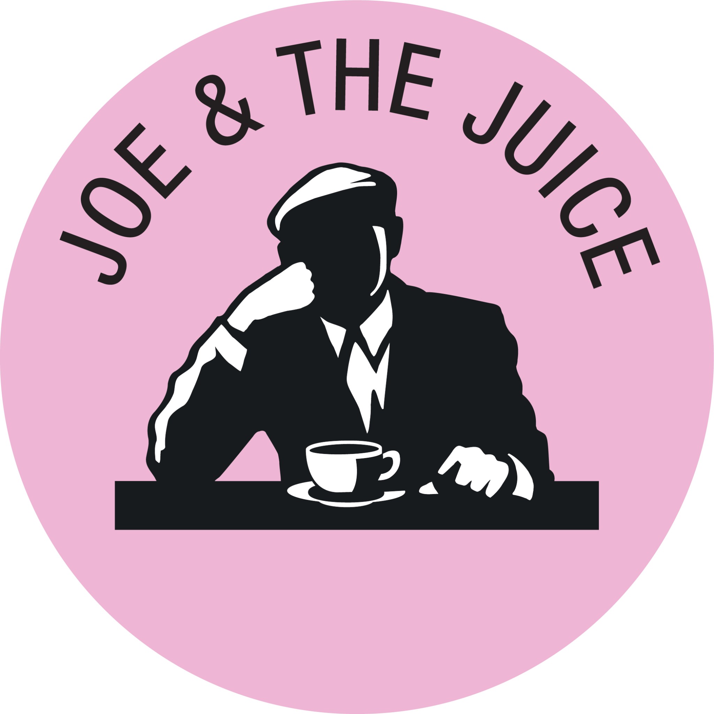
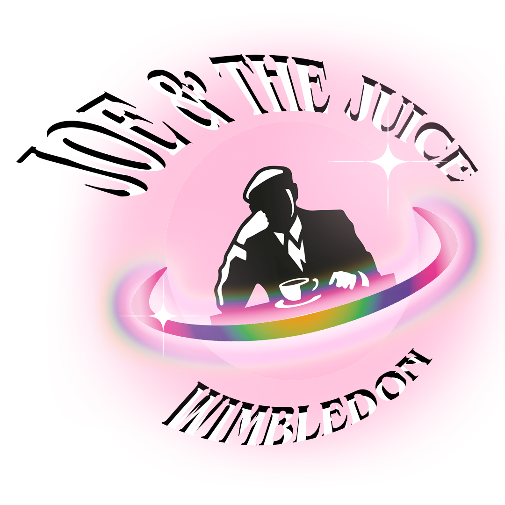
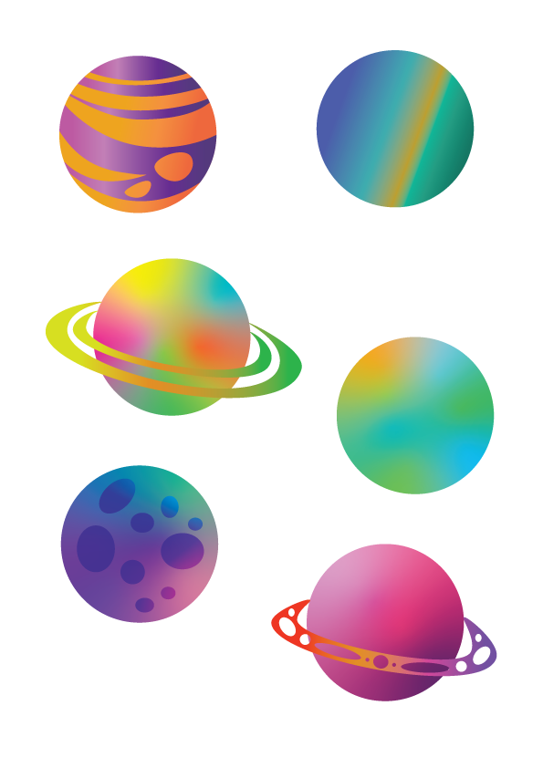
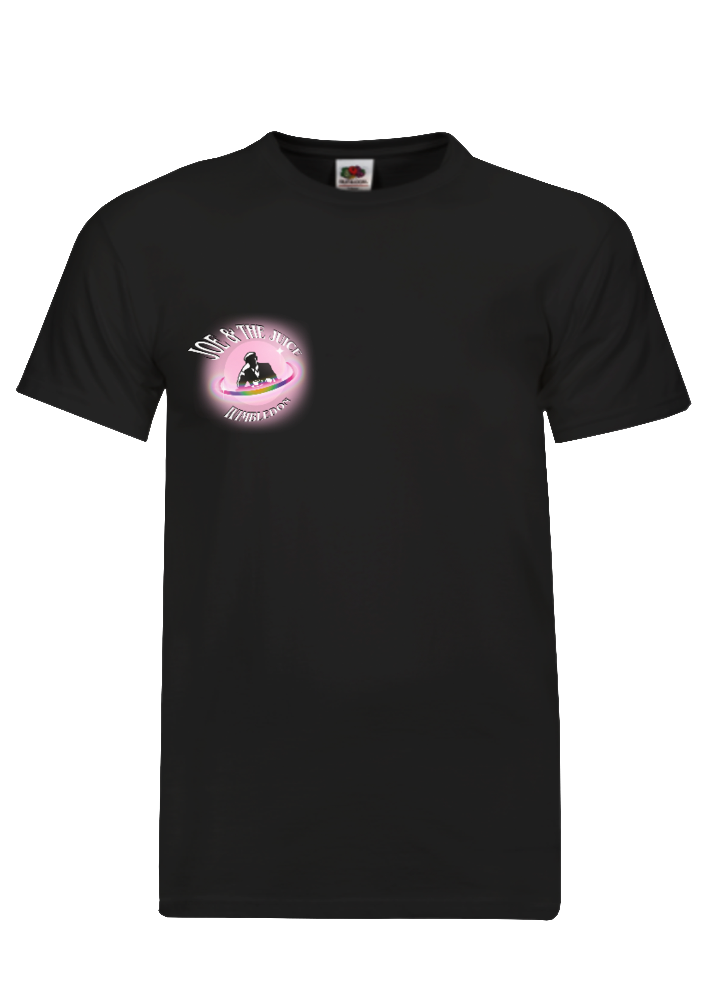
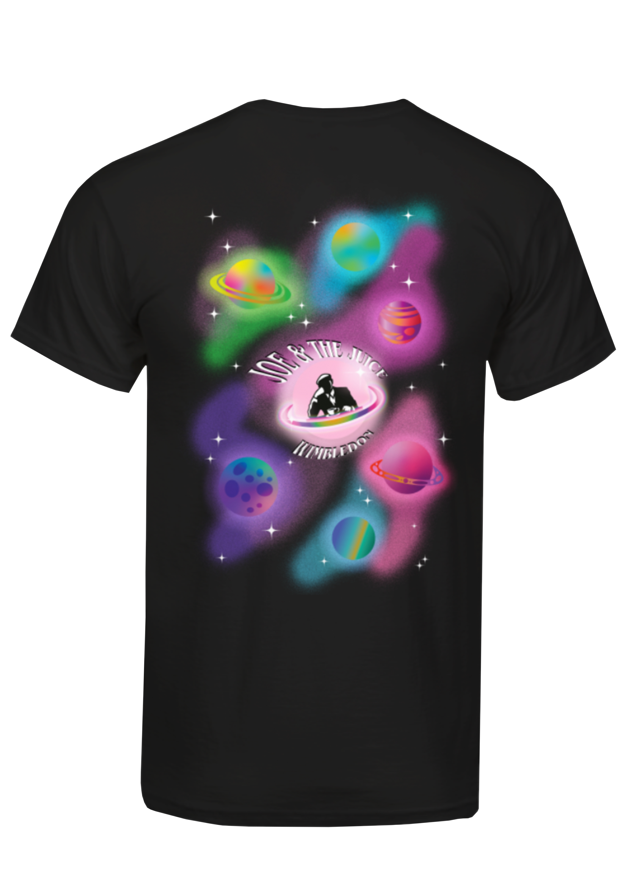

<!DOCTYPE html>
<html lang="en">
  <head>
    <meta name="viewport" content="width=device-width, initial-scale=1.0" />
    <title>Joe & the Juice</title>
    <link rel="stylesheet" href="normalize.css" />
    <link rel="stylesheet" href="pages.css" />
  </head>
  <body></body>
</html>
</div>

<div class="j">
  <p>
My journey designing t-shirts for Joe began when my sister asked me to create a design for her team. Later, after joining the company, a new rule required us to wear only Joe-themed graphic tees. However, many employees didn’t have these tees, and the company wasn’t providing them.

So, I took matters into my own hands and started designing shirts for my team. The response was fantastic—people loved the designs! Eventually, the company even held a Christmas t-shirt competition, where I earned second place.
    </p> </div>
    
    
    
    
    
    


